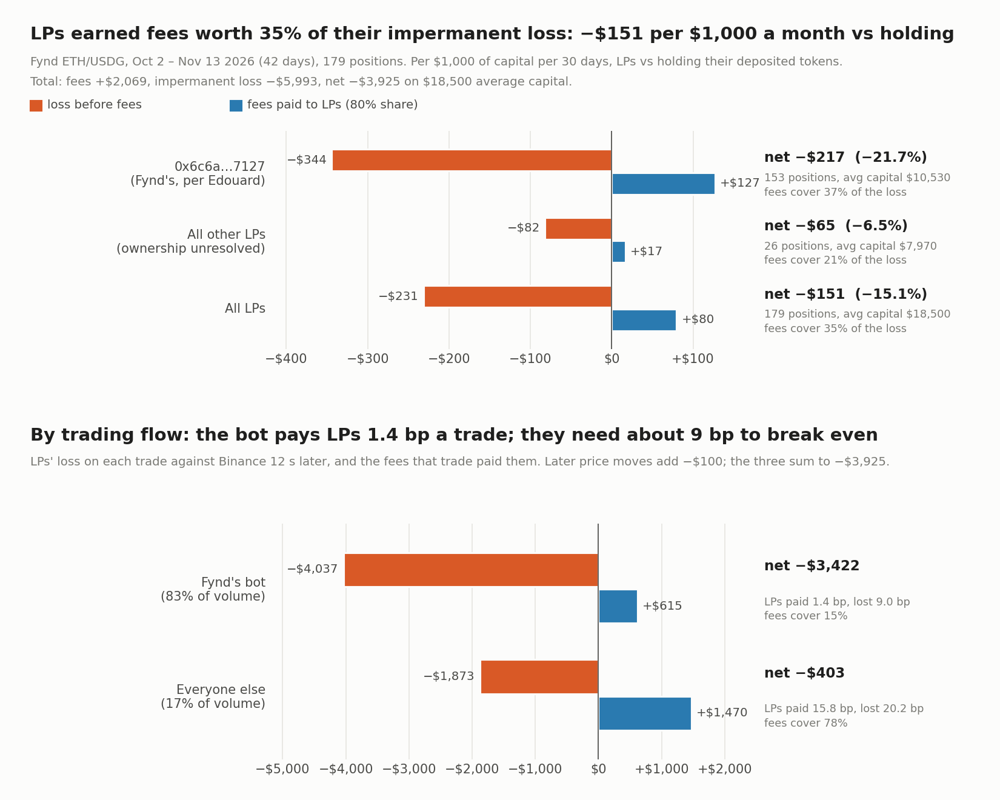

In this period LPs earned less in fees than they lost to price moves. Most of the shortfall sits in the wallet you identified as Fynd's, which kept its capital in narrow ranges, and most of it arises on the bot's trades. That loss is not the bot's profit: the bot kept about $295 after gas, and most of the rest went to the pools it hedges on. The bot does its job of keeping the price aligned (it moves the pool toward Binance on 97.9% of its trades). The open question is whether that alignment can be achieved at a lower cost to LPs.
| USD | per $1,000 per 30 days | |
|---|---|---|
| Fees to LPs (their 80% share) | +$2,069 | +$80 |
| Impermanent loss | −$5,993 | −$231 |
| LPs vs holding | −$3,925 | −$151 (95% range −$196 to −$121) |
“Vs holding” compares each position with simply holding the tokens it deposited, both valued at Binance prices when the position closed. Over 42 days that is −21.2% of average capital. ETH fell over the period, so both lost money: holding −$2,829, LPing −$6,753.
| LP group | positions | avg capital | vs holding | per $1,000 / 30 d | fees cover | typical range | typical hours open |
|---|---|---|---|---|---|---|---|
0x6c6a…7127 (yours) | 153 | $10,530 | −$3,197 | −$217 | 37% | 2.1% | 25 |
| All other LPs | 26 | $7,970 | −$728 | −$65 | 21% | 17.6% | 294 |
88% of 0x6c6a…7127's capital sat in 1–3% ranges, with each position typically open about 6 hours; that bucket alone is −$2,814. 95% of the other LPs' capital sat in 10–30% ranges. A narrow range earns more fees per dollar while the price stays inside it, but takes more impermanent loss per price move, and each reset locks that loss in. In this period the extra fees did not cover it. Treat this as the leading explanation, not a proven cause: timing and position size also differ between the groups.

| Trading flow | share of volume | fee LPs received | LPs' loss before fees | fees cover | LP net |
|---|---|---|---|---|---|
| Fynd's bot | 83% | 1.4 bp (+$615) | 9.0 bp (−$4,037) | 15% | −$3,422 |
| Everyone else | 17% | 15.8 bp (+$1,470) | 20.2 bp (−$1,873) | 78% | −$403 |
| Later price moves | −$100 | ||||
| Total | −$3,925 |
Both bp figures are per dollar of the same trades, so on this basis LPs would need about 9 bp from the bot to break even; it pays 1.4 bp. Other flow roughly pays for itself. The loss is measured against Binance 12 s after each trade; at execution time the bot-flow figure is about −$2,950. This is LVR: LPs lose it to whoever brings the pool back to the market, and in a replay an outside arbitrageur realizes about the same before fees.
Where the $3,423 went (12 s valuation; adds up to the cent)
| To | USD | share |
|---|---|---|
| Pools the bot hedged on* | $2,355 | 69% |
| Gas | $443 | 13% |
| The bot, after gas | $295 | 9% |
| Routers | $178 | 5% |
| 20% fee share | $151 | 4% |
* Swap fees ~$899, price impact ~$472, plus price differences and moves. Not those pools' profit: it is valued at Binance 12 s later.
The bot's own result
| Profit before gas | +$739 |
| Gas | −$443 |
| Profit after gas | +$295 |
From on-chain token flows and receipts; matches the bot contract's own profit events. It doesn't depend on the valuation time.
0x6c6a…7127 may narrow the gap in §2; I haven't replayed this yet.0x6c6a…7127's narrow ranges and frequent resets deliberate?Where am I likely wrong?
0x6c6a…7127 is Fynd's rests on your Nov 12 message. Ownership of the other LP wallets is unresolved. Gas on the bot wallet's 844 non-trade transactions (~$13–15) is not included.